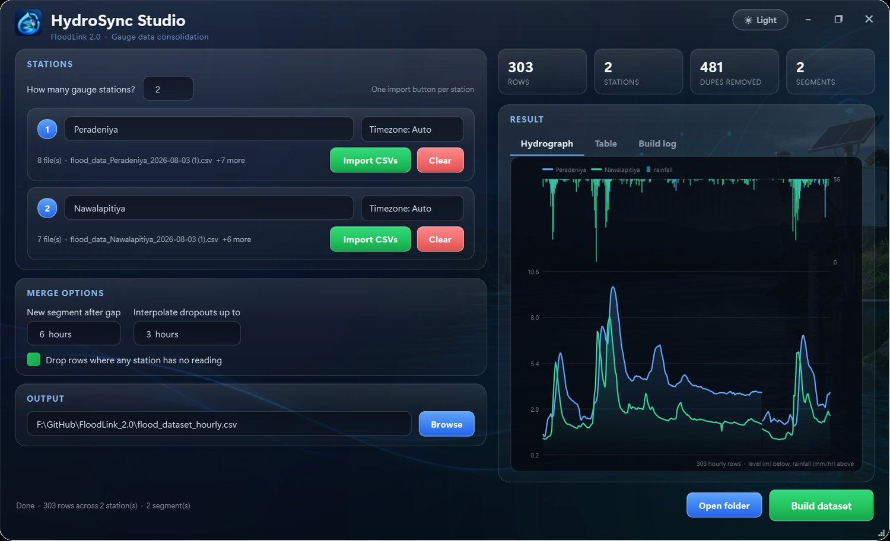
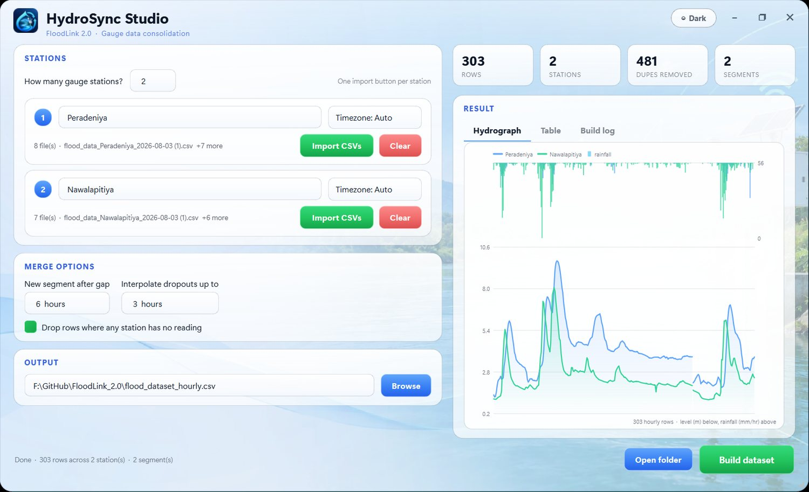

Windows desktop application
HydroSync Studio
Consolidate overlapping river-gauge exports into one continuous hourly dataset.
Every download from the gauge portal is a rolling 72-hour window, so downloading on consecutive days gives you mostly the same readings twice — and the exports arrive in three different timestamp layouts, one of which is UTC while the others are local time. Concatenating them naively duplicates most rows and silently mixes timezones, which quietly ruins any model trained on the result. HydroSync does the merge properly: one row per hour per station, overlaps removed, every timestamp on one clock. Built for FloodLink 2.0, but it works for any station data with the same problem.
- De-duplicates by hour, not by exact timestamp
- Unifies three timestamp layouts onto one timezone
- Respects recording breaks instead of inventing rows
- Interpolates short dropouts, leaves long ones empty
- Drag-and-drop import, one card per gauge station
- Runs as a single .exe — no Python needed
PythonPySide6pandasWindowsCLI + GUI